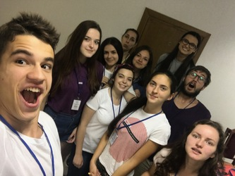
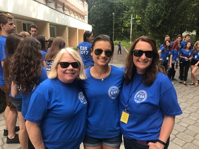
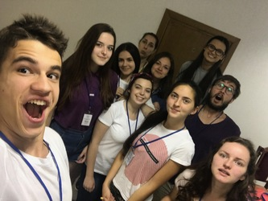
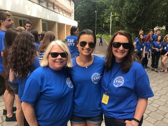
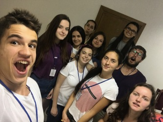
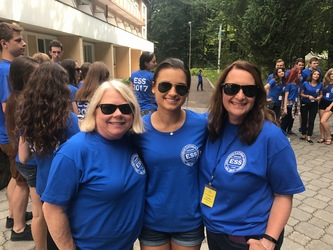

Juliana Olesnicky
Born in New Jersey, I have worked endlessly in different places and different background. I am of Ukrainian descent, giving me a bicultural aspect of how people work and seeing how they interact with others. Through this, I have done several immersion experiences regarding the Ukrainian community such as a troop leader, an English teacher volunteer in Ukraine for the summer, and an ambassador for the Ukrainian Cultural Center in Whippany, NJ. With the immersions that I was able to experience, I learned the importance of communication and working calmly with others, since with those things in mind, things are more likely to be accomplished and successully done. Working with people of all ages taught me the importance of patience and being able to work things out, as life does happen. Also being able to work so much with the Ukrainian community, I was able to understand the importance of being able to communicate and understanding different languages and cultures. This allowed me to work in a more broad sense and provided a more understanding view for me. Being able to work as a troop leader for younger children and then going on to work as a volunteer for university students who were trying to learn English were both very humbling experiences and provided useful and unique aspects to my life.
With a diverse background, I have been able to adapt and serve others as well. Working as an ambassador was able to open my eyes into a more diplomatic sense of the world, working with individuals in different groups, such as finance, cultural background, religion, and Ukrainian conservationalists themselves. I worked as a medical office assistant in Indian Wells, CA, working to organize files and making sure that the office had its records in place. This enabled me to feel the valuable skills of organization and communication, as I had to ensure that all the medical individuals had everything in its place.
With my organizational skills and ability to communicate with others, I also served as a social media coordinator and inventory manager at a nutritional company also based in Indian Wells, CA. Here, I was able to learn the mindset of constantly being attentive to detail to ensure that the company had everything it needed to run smoothly. Working with others and being able to coordinate projects successfully allowed me to rise as a captain for my water polo and swim teams, which provided me the necessary tools to understanding how teams work and being able to work with people with different goals in mind. I worked with these teams for three years, with practices both morning and night strategize and better ourselves for the meets or games that we were expecting. Granted these were humbling experiences, but also tiresome and required to break the mental block that most of us had with working such long hours and then emotionally being affected by it. Through these experiences, I was able to learn the importance of hearing people out, understanding what it means to be a team, and to be there for my teammates as problems or situations arose.
Experience
Social Media and Event Planner
• Developed ideas for social media projects
• Brand speaker at trade shows and events to promote business
• Stocked and restocked after events and showcasings.
Office Assistant
• Responsible for filing medical records, working expeditiously to allow efficiency, and ensuring a positive experience with patients.
• Worked around the office cleaning and providing a welcoming atmosphere.
Teaching Volunteer
• Conducted sessions to teach unviersity students how to speak English
• Provided research to show students the way of living in the US, particularly in California
• Created educational content to understand information and ways of grasping information
• Worked for a month to ensure about 300 students had a first-hand experience with someone from the US
Education
Xavier College Preparatory High School
University of California, Riverside
Portfolio
 




